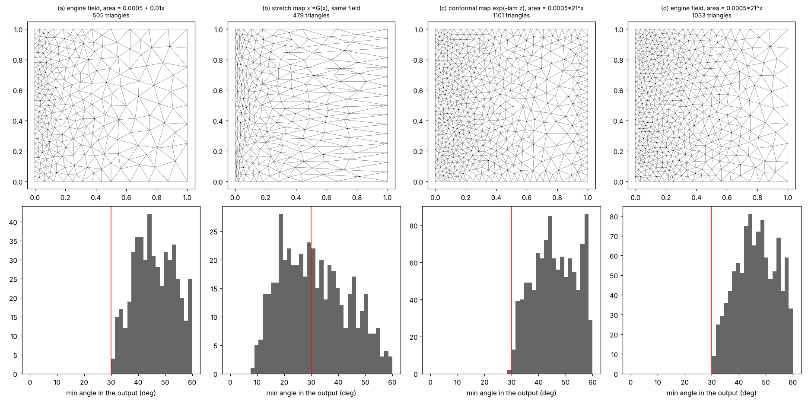
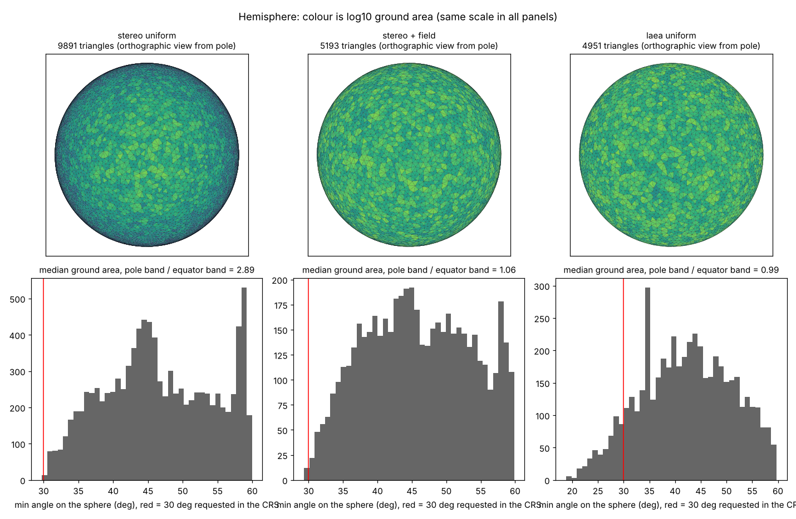

trianglewins / sizing
Sizing fields and map projections
laridae's refinement takes a sizing field: the largest triangle area allowed at each point, as a function or a grid (laridae: refinement, angle, area and sizing fields). A map projection already stretches space, so a mesh that is uniform in one CRS is graded somewhere else. When can a projection do the job of a sizing field, and what is left that only the mesh engine can do?
The short version:
- A projection carries shape, a sizing field carries size, and the engine carries everything tied to the input. Only a conformal projection keeps triangle shape, so it is the only kind that pairs cleanly with a scalar field.
- A conformal projection is a sizing field, but a restricted
one. It only produces fields whose log is harmonic, such as
exponential grading or size proportional to distance from a point.
laridae's own example,
0.0005 + 0.01 * x, is not one of them. - An equal-area projection gets the areas right and the shapes wrong. A scalar sizing field cannot repair shape, so the angle guarantee is lost for good.
- Constraints, holes, breaklines, grading limits and deliberate stretching are mesh requirements, and no projection stands in for them.
What a map does to a mesh
Mesh uniformly in a CRS and then transform the vertices. Close up, the transform is a linear map: a scale in each of two directions, the axes of the Tissot ellipse, a (the larger) and b. Then:
- triangle size changes with the scale (area by a times b),
- triangle shape changes with the ratio a/b, and angles are kept only when a = b, which is what conformal means,
- straight edges come out as curves, and circles stop being circles, so a Delaunay mesh need not stay Delaunay.
A laridae sizing field is one number per point. It asks for "this big, and still well shaped". Count what each side can supply:
| what you want | functions to choose | can a map supply it? |
|---|---|---|
| area only, shape does not matter | 1, any | yes, always: some map has exactly that area density (the "equidistribution" map of moving-mesh methods) |
size with good shape (laridae size=) |
1, any | only if log of size is harmonic, using a conformal map |
| deliberately stretched triangles (a metric) | 3 | only if the metric is flat, because a map has just 2 functions |
| constraints, holes, breaklines, feature size, grading limits | none | no: these come from the input, not from space |
Conformal: the right shape, for a narrow set of fields
In a conformal map a = b = k, so a uniform mesh comes out with edges scaled by 1/k and the same angles. The size field it implies is k itself. For a map from flat to flat, log k is always harmonic (its Laplacian is zero). That is a strong restriction:
- exponential grading, size proportional to exp(c x), is harmonic, via the map w = exp(z),
- size proportional to distance r from a point is harmonic, via log-polar, which is Mercator seen from polar stereographic,
0.0005 + 0.01 * x(as area) is not: the Laplacian of its log is never zero, so no map gives that field with good shapes,- a field that follows data (fine near the coast, fine where the slope is steep) is almost never harmonic.
On the sphere there is even less choice: the conformal maps to the plane are stereographic, Mercator, Lambert conformal conic and their relatives, each with its own fixed scale pattern.

| case | how | smallest angle (30 requested) |
|---|---|---|
| (a) linear area field | engine sizing field | 30.3 |
| (b) the same field | uniform mesh in x' = G(x), mapped back | 8.8 |
| (c) exponential field | uniform mesh in w = exp(-z log(21) / 2), mapped back | 29.6 |
| (d) exponential field | engine sizing field | 30.3 |
The stretch map in (b) gets the areas right (the median area is the same share of the target as the engine's), but the triangles are squashed at one end and pulled out at the other, 21 to 1 across the square. In (c) the field is log-linear, so a conformal map does it, and it matches the engine in both size and shape.
Equal-area: the right size, the wrong shape
An equal-area projection keeps a times b = 1, so a uniform mesh has uniform ground area. Away from the centre a and b part, though, so the angle guarantee is spent on the Tissot ellipse. A sizing field changes size, not shape, so nothing applied later gets the angles back.

Northern hemisphere, polar aspect, smallest angle 30 requested in the CRS, everything measured on the sphere:
| case | ground area, pole / equator | smallest angle on the sphere | edges not Delaunay on the sphere |
|---|---|---|---|
| stereographic, uniform | 2.89 | 29.8 | 0 |
| stereographic, area = target times k^2 | 1.06 | 29.3 | 0 |
| Lambert azimuthal equal-area, uniform | 0.99 | 18.8 | 5.8% |
The middle row is the recipe: a conformal CRS plus a scalar field that compensates for its scale gives triangles that are the same size and well shaped on the ground. The projection supplies the shape and the field supplies the size. With an equal-area CRS the size comes free and the shape is gone for good.
Do angle guarantees survive?
Refinement promises a smallest angle in the CRS it ran in. After the transform:
- Conformal: angles are kept up to an error that shrinks with triangle size relative to how fast the scale changes. 30 requested became 29.3 and 29.8 above.
- Anything else: the promise weakens with a/b. For a/b = 2 a triangle with all angles at least 30 can drop to about 15 degrees. You can read a/b off the Tissot ellipse before meshing and know the worst case.
The Delaunay property is a sharper story. Stereographic maps circles to circles, so a Delaunay mesh in polar stereographic is exactly Delaunay on the sphere (no failures above). That is special to stereographic. Other conformal maps keep circles only approximately, and the equal-area map broke 5.8% of edges. If it matters downstream (interpolation, Voronoi cells), flip edges again on the target surface after the transform; the vertices stay where they are. Grids as meshes shows the same thing from the other direction: Delaunay in which frame is a choice made before meshing.
Edges after the transform
A straight edge in the CRS is a curve in the target. Measured as the gap between the transformed edge and the great circle at its midpoint, divided by edge length: about 0.003 typically and 0.01 to 0.013 at most for these meshes, smaller for smaller triangles. Three things follow, and they are about the mesh, not about stretching:
- Densify constraints in the meshing CRS. A breakline that is straight on the ground is a curve in the CRS. Give the engine that curve, densified, or the transformed mesh will not follow it. Curves: bigcurve and s2 covers how.
- Say which straight line you mean. The transformed chord, the great circle and the rhumb line differ by about the same amount as the gap above. A mesh stores vertices and connectivity, so an edge is straight in whatever space it is drawn in, and that is worth writing down.
- Check for flipped triangles. Coarse triangles where a projection bends hard (near its edge or a seam) can turn over when transformed. The sign of each triangle's orientation in the target catches it.
What only the engine can do
- Any isotropic field whose log is not harmonic:
data-driven density, distance to a feature, laridae's linear example.
Use
size=inlari_refine(). - Grading limits. Size should not change too fast, or quality suffers where it jumps. Meshers bound or smooth the field; a projection's grading is whatever it is.
- Constraints, holes, breaklines and local feature size, where refinement is driven by the input, such as two close coastlines. Projections act on all of space and know nothing about the input.
- Stretching on purpose, such as triangles drawn out along a river or a front. That needs a three-part metric field, usually not flat, and an anisotropic mesher (BAMG, mmg2d, gmsh). laridae and cdtr do not do this.
A recipe for laridae and cdtr
- Choose a conformal CRS for the region: polar stereographic, Lambert conformal conic, or Mercator for a band of latitude. Angles survive and, in polar stereographic, so does Delaunay.
- Densify the constraints in that CRS, following the curve they make on the ground (bigcurve).
- Write the target as a ground area
A(lon, lat)and give laridaesize = function(x, y) A(inverse(x, y)) * k(x, y)^2. PROJ reports the scale factors: for a conformal projection the areal scale is k^2. - Transform the vertices, flip to Delaunay on the target if needed, and check that no triangle has turned over.
cdtr refines to one global max_area and
min_angle, with no field, so for cdtr the projection is the
only lever for grading: choose a conformal CRS and accept its scale
pattern, which is size proportional to 1/k on the ground.
The figures and numbers come from survey/sizing/experiments.py (numpy, matplotlib, triangle). It uses Shewchuk's Triangle, from the same Delaunay refinement family as laridae, so it runs without CGAL; an R version with laridae and PROJ scale factors on a real region is still to do.